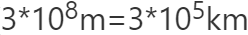
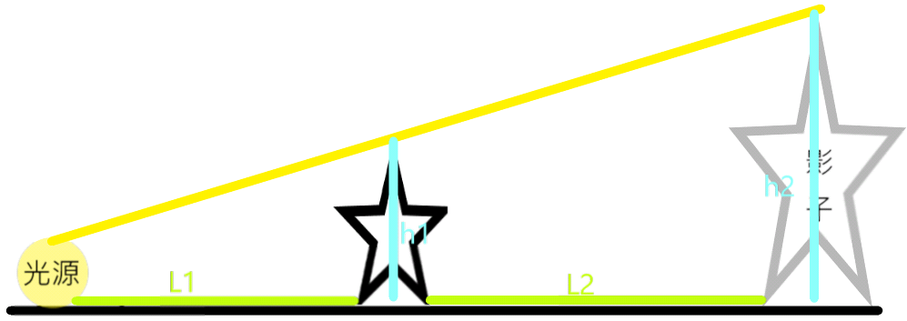
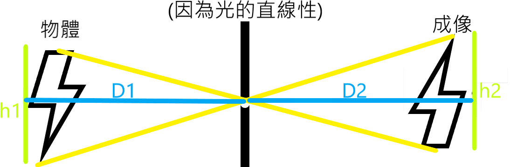
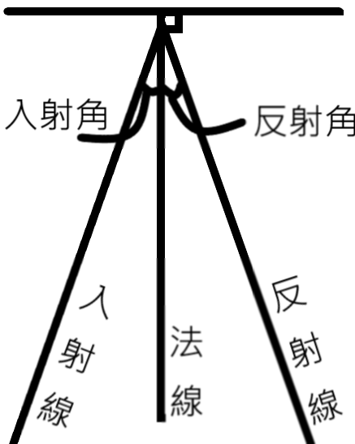

光的神奇世界
World of Substance
維持生命的元素:陽光、空氣、水、養分中，最重要的就是太陽，而太陽是如何將光線傳送到地表，造就了我們的存在呢？讓我們一起探索光的奧妙。

3. 真空中的傳播速率是每秒30萬公里。()
3. 當針孔愈大，成像愈亮愈模糊(淡)。4. 針孔成像的生活例子：樹蔭下的圓形亮點，即是光線以樹葉縫隙於地面的成像。


1. 法線：垂直於反射面的線。2. 入射角：入射線與法線的夾角。3. 反射角：反射線與法線的夾角。
3. 光進入較慢的介質時(如:空氣中~水)，會偏向法線，此時入射角>折射角。4. 光進入較快的介質時(如:水~空氣中)，會偏離法線，此時入射角<折射角。5. 波速=頻率*波長，折射時顏色(頻率)不變、為定值，當波速越快、波長就越長。